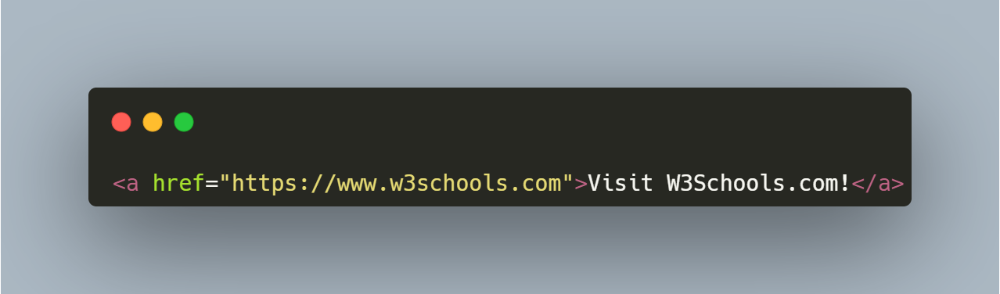
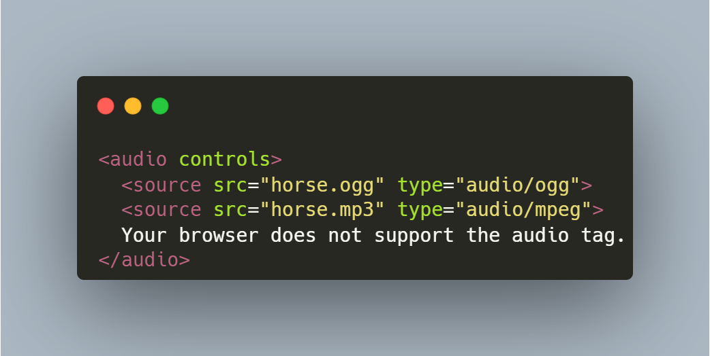

A tag <a> define um hiperlink, que é usado para vincular de uma pagina a outra.
Uma pagina vinculada normalmente é exibida na janela atual do navegador, e menos que você especifique outro destino

Visite meu site!A tag <address> define as informações de contato do autor/proprietário de um documento ou artigo. As informações de contato podem ser um endereço de e-mail, URL, endereço físico, número de telefone, conta de mídia social, etc.
A tag de áudio é usada para incorporar conteúdo sonoro em um documento, como música ou outros fluxos de áudio. A tag contém uma ou mais tags com diferentes fontes de áudio. O navegador escolherá a primeira fonte que ele suporta. O texto entre as tags e só será exibido em navegadores que não suportam o elemento. Há três formatos de áudio suportados em HTML: MP3, WAV e OGG.

A <video>tag é usada para incorporar conteúdo de vídeo em um documento, como um clipe de filme ou outros fluxos de vídeo. A <video> tag contém uma ou mais <source> tags com diferentes fontes de vídeo. O navegador escolherá a primeira fonte que ele suporta.
HTML <button> Define um botão clicável.</button> <p>Dentro de um <button> elemento você pode colocar texto (e tags como <i>, <b>, <strong>, <br>, <img>, etc.). Isso não é possível com um botão criado com o <input> elemento!</p>
sempre especifique o type atributo de um <button> elemento para informar aos navegadores que tipo de botão é. Você pode estilizar botões facilmente com CSS! Veja os exemplos abaixo ou visite nosso tutorial de Botões CSS